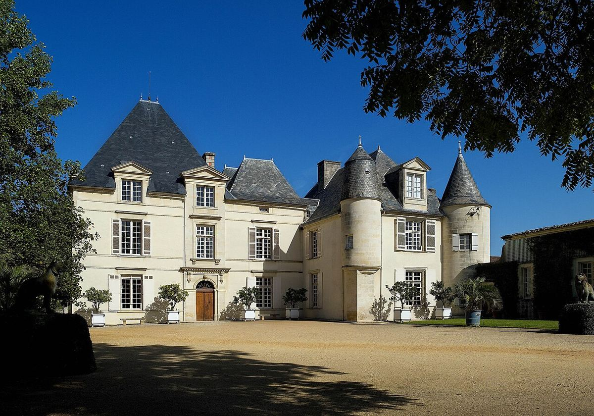

RED
Premier Grand Cru Classé in Pessac-Léognan, the only château outside the Médoc included in the 1855 classification of reds; owned by the Dillon family since 1935.

Château Haut-Brion lies in Pessac, now within the urban area of Bordeaux, in the Graves district. In the 16th century the estate passed to the Pontac family, who made it one of the first Bordeaux wines sold under the name of its estate. By the 17th century it was already known in London: the diarist Samuel Pepys noted in 1663 that he had drunk “Ho Bryan”.
In the 1855 classification it was the only château outside the Médoc to be included among the reds, ranked Premier Grand Cru Classé. In 1935 it was bought by the American banker Clarence Dillon, whose descendants still own it through Domaine Clarence Dillon, which also owns neighbouring Château La Mission Haut-Brion.
The vineyard, on deep gravel, is planted with Merlot, Cabernet Sauvignon and Cabernet Franc for the reds, and with Sémillon and Sauvignon Blanc for a very rare white. As well as the grand vin, the estate makes the second wine Le Clarence de Haut-Brion.
The Haut-Brion style is usually described as elegant and complex, with the earthy, smoky notes typical of Graves, and great ageing potential.
The estate’s white wine, though made in very small quantities, is equally renowned.